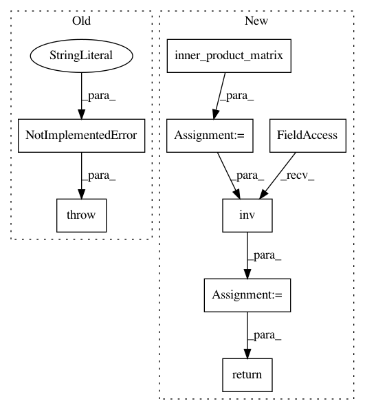

276d53ecd49afcf7d055a9c55ac51e6eaecc06e7,geomstats/geometry/riemannian_metric.py,RiemannianMetric,inner_product_inverse_matrix,#RiemannianMetric#Any#,68
Before Change
----------
base_point : array-like, shape=[n_samples, dimension], optional
raise NotImplementedError(
"The computation of the inner product inv. matrix"
"is not implemented.")
def inner_product(self, tangent_vec_a, tangent_vec_b, base_point=None):
Compute inner product between two tangent vectors at a base point.
After Change
----------
base_point : array-like, shape=[n_samples, dimension], optional
metric_matrix = self.inner_product_matrix(base_point)
cometric_matrix = gs.linalg.inv(metric_matrix)
return cometric_matrix
def inner_product_derivative_matrix(self, base_point=None):
Compute derivative of the inner prod matrix at base point.
In pattern: SUPERPATTERN
Frequency: 3
Non-data size: 8
Instances
Project Name: geomstats/geomstats
Commit Name: 276d53ecd49afcf7d055a9c55ac51e6eaecc06e7
Time: 2020-02-17
Author: yann.cabanes@u-bordeaux.fr
File Name: geomstats/geometry/riemannian_metric.py
Class Name: RiemannianMetric
Method Name: inner_product_inverse_matrix
Project Name: geomstats/geomstats
Commit Name: f9919913686e1eb255eaa35f10cde48d8e239eb7
Time: 2020-01-28
Author: nicolas.guigui@inria.fr
File Name: geomstats/geometry/riemannian_metric.py
Class Name: RiemannianMetric
Method Name: inner_product_inverse_matrix
Project Name: geomstats/geomstats
Commit Name: 3af9f3404dee20419a8069309cde29ec288f66d9
Time: 2020-01-24
Author: nicolas.guigui@inria.fr
File Name: geomstats/geometry/riemannian_metric.py
Class Name: RiemannianMetric
Method Name: inner_product_inverse_matrix